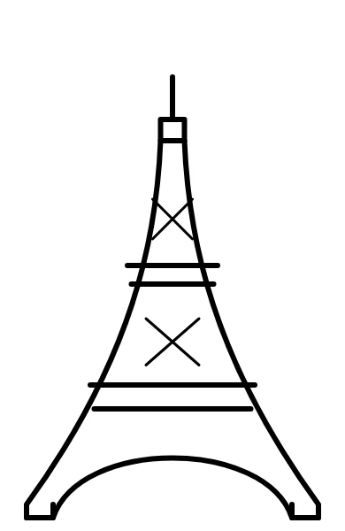
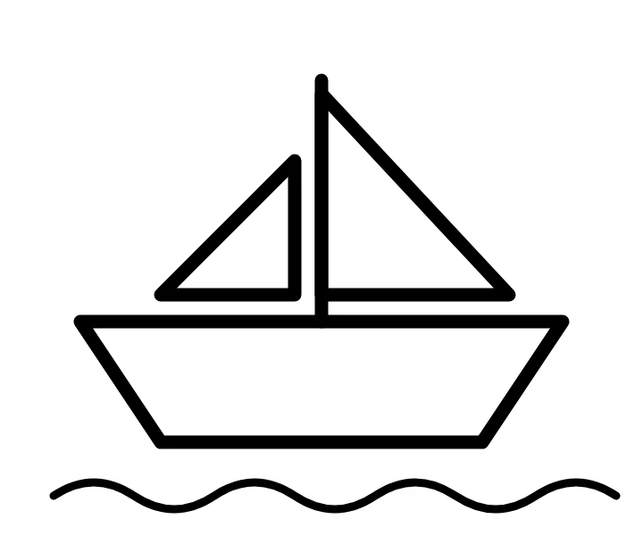
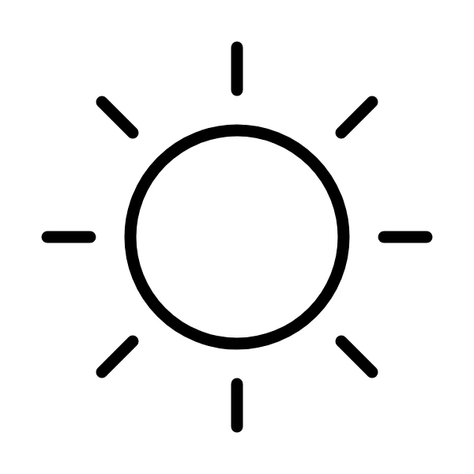

Prénom :
Date :
Texte 1 : Paris
niveau A1.1
C’est Paris.
C’est la tour Eiffel.
C’est la Seine.
Je lis, je fais.
1. Je colorie la tour Eiffel.
2. Je colorie le soleil.
3. J’entoure un bateau.
4. J’écris Paris à droite de la tour Eiffel.
Je relie le mot et l’image.
A1.1
le soleil•
•
la tour Eiffel•
•
le bateau•
•
Prénom :
Date :
Texte 2 : Paris
niveau A1
Paris est la capitale de la France. C’est une grande ville.
À Paris, il y a la tour Eiffel. Elle est très haute.
Il y a aussi un fleuve : la Seine. Sur la Seine, il y a des ponts et des bateaux.
Je lis, je fais.
1. Je colorie la tour Eiffel en gris.
2. Je coche : Paris est ☐ une petite ville ☐ une moyenne ville ☐ une grande ville.
3. J’entoure les trois bateaux.
4. Je dessine un nuage dans le ciel.
5. Je colorie le soleil en jaune.
6. J’écris « Paris » à droite de la tour Eiffel.
Je réponds aux questions. J’écris une phrase.
A1
1. Comment s’appelle la capitale de la France ?
→ La capitale de la France s’appelle
2. Comment s’appelle le fleuve de Paris ?
→ Le fleuve s’appelle
3. La tour Eiffel est petite ou très haute ?
→ La tour Eiffel est
Prénom :
Date :
Texte 3 : Paris
niveau A2
Paris est la capitale de la France. C’est une très grande ville : environ deux millions de personnes y habitent, et beaucoup de touristes viennent la visiter chaque année. La Seine traverse la ville et on peut la découvrir en bateau.
Le monument le plus célèbre de Paris est la tour Eiffel. Gustave Eiffel l’a construite en 1889 pour l’Exposition universelle. Elle mesure 330 mètres et elle a trois étages. Pour monter, on peut prendre l’ascenseur, mais les sportifs préfèrent l’escalier : il y a plus de 600 marches jusqu’au deuxième étage !
Pour se déplacer dans Paris, les habitants prennent le métro, le bus ou le vélo, parce que la voiture est difficile à garer.
Je lis, je fais.
1. Je colorie la tour Eiffel en gris et le ciel en bleu.
2. Je dessine deux bateaux sur la Seine, sous le pont.
3. Je dessine un vélo sur le pont.
4. J’écris la date de construction à côté de la tour Eiffel.
5. J’écris la hauteur de la tour en haut du dessin.
6. J’entoure le transport que je prends pour venir au lycée : métro – bus – vélo
Je réponds aux questions. J’écris une phrase.
A2
1. Qui a construit la tour Eiffel ?
→
2. Combien mesure la tour Eiffel ?
→
3. Quand a-t-elle été construite ?
→